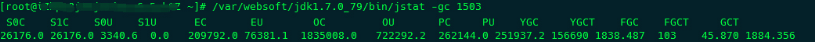

G1垃圾收集器(转载)
说明
concurrent: 并发, 多个线程协同做同一件事情(有状态)
parallel: 并行, 多个线程各做各的事情(互相间无共享状态)
在GC领域: concurrent算法指GC线程和业务线程能并发执行； parallel指GC线程之间的并行。
参考: What’s the difference between concurrency and parallelism
concurrent: 并发, 多个线程协同做同一件事情(有状态)
parallel: 并行, 多个线程各做各的事情(互相间无共享状态)
在GC领域: concurrent算法指GC线程和业务线程能并发执行； parallel指GC线程之间的并行。
参考: What’s the difference between concurrency and parallelism
在对Java内存泄漏进行分析的时候，需要对jvm运行期间的内存占用、线程执行等情况进行记录的dump文件，常用的主要有thread dump和heap dump。
上面两种dump文件都具有实时性，因此需要在服务器出现问题的时候生成，并且多生成几个文件，方便进行对比分析。下面我们先来说一下如何生成 thread dump。
当服务器CPU100%的时候，通过定位占用资源最大的线程定位到 VM Thread：
"VM Thread" prio=10 tid=0x00007fbea80d3800 nid=0x5e9 runnable
这个时候需要使用 jstat -gc 命令查看gc的信息，显示结果如下

S0C S1C S0U S1U EC EU OC OU PC PU YGC YGCT FGC FGCT GCT
64.0 64.0 0.0 0.0 332992.0 0.0 666304.0 73192.5 83968.0 83967.9 6893 17.576 6882 2705.923 2723.499
隔三差五记录自己的炒股心得，常看常新
编写DTD（文档类型定义，Document Type Definition）是一种方式来定义XML文档的结构、元素、属性以及元素间的关系。DTD定义可以内嵌在XML文档中，也可以作为一个外部文件供多个XML文档引用。下面是编写DTD的基本步骤和语法示例：
之前的文章,我已经教会大家白嫖github pages创建自己的博客体系了，现在，让我们丰富我们的博客，为我们的博客添加评论区吧